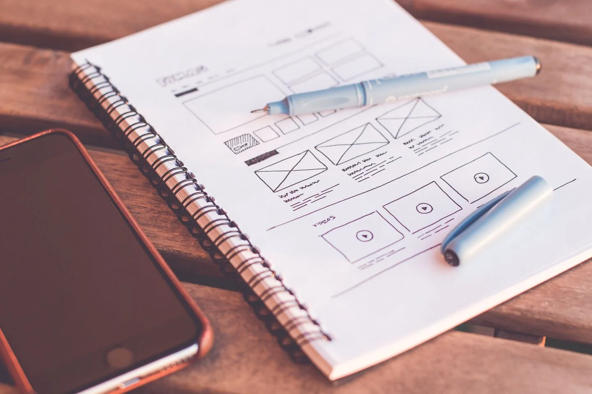

Fachada clara con palmeras y cielo azul
Fotografía de Zachary DeBottis en Pexels.
Ver fotografía original ↗Fotografías de archivo utilizadas como placeholders en esta demo. No representan los relatos ni a sus autores ficticios.
La licencia de Pexels permite su uso gratuito personal y comercial y su modificación. No son fotografías propias de CIEM. No se ofrecen como producto fotográfico independiente.
Descargadas el 27 de octubre de 2026, redimensionadas y convertidas a WebP. Se muestran con recorte según el diseño.
Fotografía de Zachary DeBottis en Pexels.
Ver fotografía original ↗Fotografía de Expect Best en Pexels.
Ver fotografía original ↗Fotografía de Pixabay en Pexels.
Ver fotografía original ↗
Fotografía de Pixabay en Pexels.
Ver fotografía original ↗Fotografía de Lukas Kloeppel en Pexels.
Ver fotografía original ↗
Fotografía de picjumbo.com en Pexels.
Ver fotografía original ↗